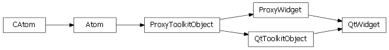

Widget¶
- class enaml.widgets.widget.Widget(parent=None, **kwargs)[source]¶
Bases: enaml.widgets.toolkit_object.ToolkitObject
The base class of visible widgets in Enaml.
- enabled¶
Whether or not the widget is enabled.
- visible¶
Whether or not the widget is visible.
- background¶
The background color of the widget.
- foreground¶
The foreground color of the widget.
- font¶
The font used for the widget.
- minimum_size¶
The minimum size for the widget. The default means that the client should determine an intelligent minimum size.
- maximum_size¶
The maximum size for the widget. The default means that the client should determine and inteliigent maximum size.
- tool_tip¶
The tool tip to show when the user hovers over the widget.
- status_tip¶
The status tip to show when the user hovers over the widget.
- show_focus_rect¶
A flag indicating whether or not to show the focus rectangle for the given widget. This is not necessarily support by all widgets on all clients. A value of None indicates to use the default as supplied by the client.
- proxy¶
A reference to the ProxyWidget object.
Backends¶
Qt¶

- class enaml.qt.qt_widget.QtWidget[source]¶
Bases: enaml.qt.qt_toolkit_object.QtToolkitObject, enaml.widgets.widget.ProxyWidget
A Qt implementation of an Enaml ProxyWidget.
- widget¶
A reference to the toolkit widget created by the proxy.
- widget_item¶
A QWidgetItem created on-demand for the widget. This is used by the layout engine to compute correct size hints for the widget.
- set_show_focus_rect(show)[source]¶
Set whether or not to show the focus rect.
This is currently only supported on OSX.
Ensure the widget is hidden.
Wx¶

- class enaml.wx.wx_widget.WxWidget[source]¶
Bases: enaml.wx.wx_toolkit_object.WxToolkitObject, enaml.widgets.widget.ProxyWidget
A Wx implementation of an Enaml ProxyWidget.
- widget¶
A reference to the toolkit widget created by the proxy.
- update_geometry()[source]¶
Notify the layout system that this widget has changed.
This method should be called when the geometry of the widget has changed and the layout system should update the layout. This will post a wxEvtLayoutRequested event to the parent of this widget.
Ensure the widget is hidden.